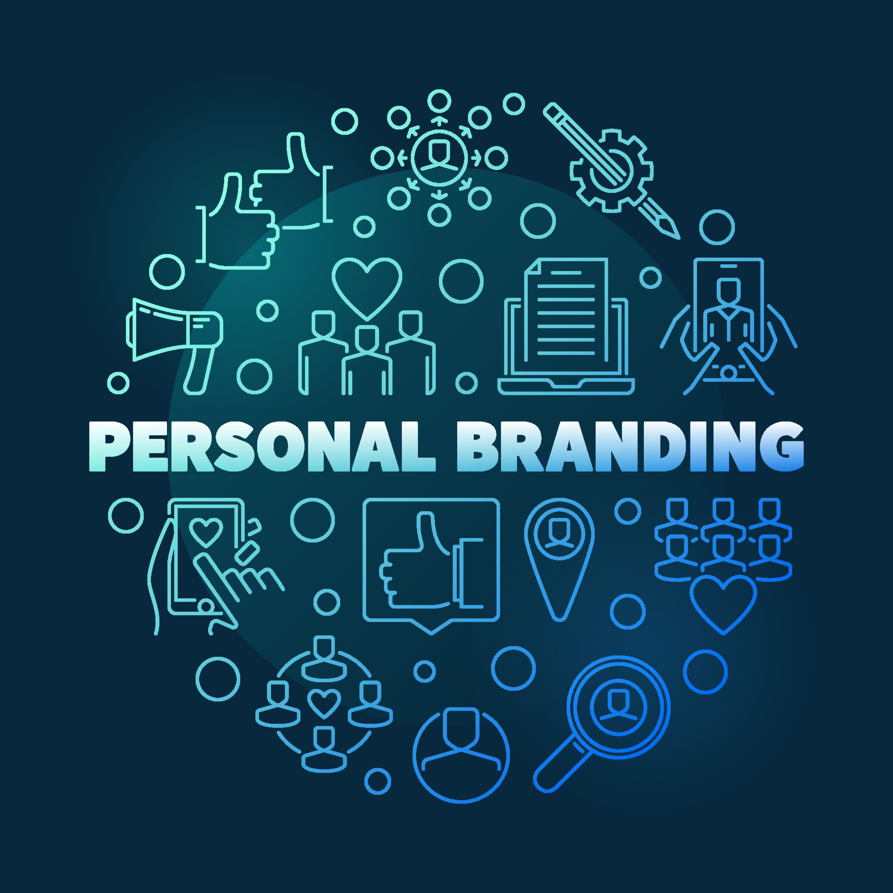

Personal Branding
Build a strong, authentic digital identity
In today's world of freelancing and digital work, your personal brand is your online identity.
This course gives you the tools to identify, build, and promote a personal brand that reflects
your values, skills, and professional ambitions.
Course Title: Personal Branding

Course Overview
This course is designed for freelancers and young professionals who want to create a clear,
consistent, and impactful personal brand that attracts clients, job opportunities,
and professional growth.
- Understand what personal branding is and why it matters.
- Learn the four core pillars of a powerful personal brand.
- Follow a simple framework to design and communicate your brand.
- Use digital platforms to increase your visibility and credibility.
- Build a supportive professional network and community.
Course Objectives
- Understand the concept and value of personal branding.
- Explore the core pillars: consistency, authenticity, expertise, and visibility.
- Define your personal branding goals and identity.
- Choose suitable platforms to build and grow your brand.
- Create content that clearly reflects your brand.
- Build and engage with a professional network and community.
- Apply personal branding to grow your freelance career.
Module 1: Introduction to Personal Branding
What is Personal Branding?
Personal branding is what people say about you when you're not in the room.
It is the way you present yourself, your values, and your unique strengths to the world.
Why Personal Branding?
Think of your favorite brands: they are memorable, clear about their value, and
consistent in how they communicate. In the same way, individuals can build their own
identity through personal branding to stand out in a crowded marketplace.
Pillars of a Powerful Personal Brand
A strong personal brand is built on four key pillars. Together, they help you create
a brand that is memorable, trustworthy, and impactful.
- Consistency (C): Show up with the same message, tone, and values across all platforms.
- Authenticity (A): Be true to who you are, what you believe, and what you care about.
- Expertise (E): Demonstrate your skills and knowledge through valuable content and results.
- Visibility (V): Be present where your audience is and communicate regularly.
Authenticity
Authenticity is about being true to yourself, your values, beliefs, and who you really are.
When you are authentic, you allow others to see the real you, which helps to build a deeper connection.
When your audience resonates with your mission and values, they are more likely to become
loyal followers. Transparency and honesty play a crucial role in building trust.
In personal branding, authenticity is key to creating a strong and lasting brand.
Consistency
Consistency is the cornerstone of building a strong personal brand.
It is not just about what you say, but how you show up day after day across all platforms.
Whether through social media posts, public appearances, or everyday conversations, maintaining a
consistent image and message helps people clearly understand who you are and what you stand for.
When you consistently deliver the same values, tone, and messaging, your audience finds it easier
to connect with you and trust you.
Expertise & Visibility
Your personal brand should highlight your knowledge and skills. To position yourself as an expert,
share valuable insights, offer real solutions, and show proof through testimonials, case studies,
and practical work.
Visibility is essential. Be active on the platforms where your audience spends time and engage
consistently. Different platforms offer different opportunities:
- LinkedIn: Professional networking and value-driven content.
- Instagram: Visual storytelling and your personal journey.
- Twitter: Real-time engagement and quick insights.
- Blogs / Podcasts / Newsletters: Deep dives into your expertise.
Personal Branding Framework
This model includes five stages to help you build a powerful brand:
- Goals: Define what you want your brand to achieve.
- Brand: Clarify your personality, strengths, traits, and passion.
- Platform: Choose the right online spaces to show your brand.
- Content: Create messages and stories that reflect your brand.
- Community: Build relationships with people who support and resonate with your brand.
Goals, Brand & Platform
Goals: Examples of personal branding goals include:
- Nurturing relationships with your audience, peers, and influencers.
- Creating sales and attracting ideal clients or customers.
- Attracting new opportunities, collaborations, and projects.
- Standing out when applying for new jobs or roles.
- Contributing to your industry by sharing knowledge and expertise.
Brand: Amplify what makes you unique and memorable:
- Your personality (introverted, extroverted, humorous, thoughtful, etc.).
- Your strengths (technical skills, soft skills, and areas of expertise).
- Your traits (dependable, creative, ambitious, collaborative, etc.).
- Your passion (what truly excites and motivates you).
Platform: Be active where it matters most:
- Personal website: Your central hub to showcase work and story.
- LinkedIn: Professional network and proof of your experience.
- Freelancing platforms: Upwork, Fiverr, and others to reach clients.
Networking & Community Building
Networking is a personal process that takes time and effort.
It is not just about collecting contacts, but about forming meaningful relationships that
support your personal and professional growth.
Networking tips:
- Find what works for you: large events, small meetings, or online platforms.
- Take your time and focus on quality over quantity.
- Be genuine, show interest in others, and offer value when you can.
Effective networking:
- Use positive, empathetic language.
- Listen actively and avoid interrupting.
- Use consistent brand language when you introduce yourself.
- Give clear, concise answers about who you are and what you do.
- Build trust gradually through sincere engagement.
Good Luck Building Your Personal Brand!
You now have a clear framework to define your goals, design your brand, choose the right platforms,
create meaningful content, and build a strong community around your work.
Stay consistent, stay authentic, keep learning, and keep showing up. Your personal brand is a long-term
investment in your future opportunities and impact.